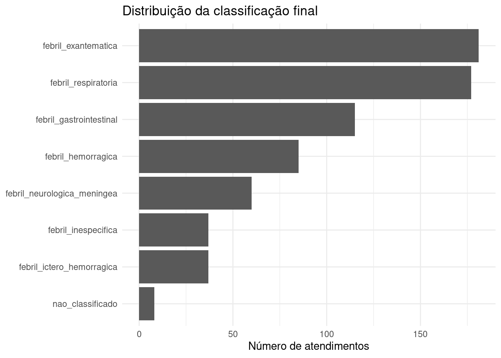
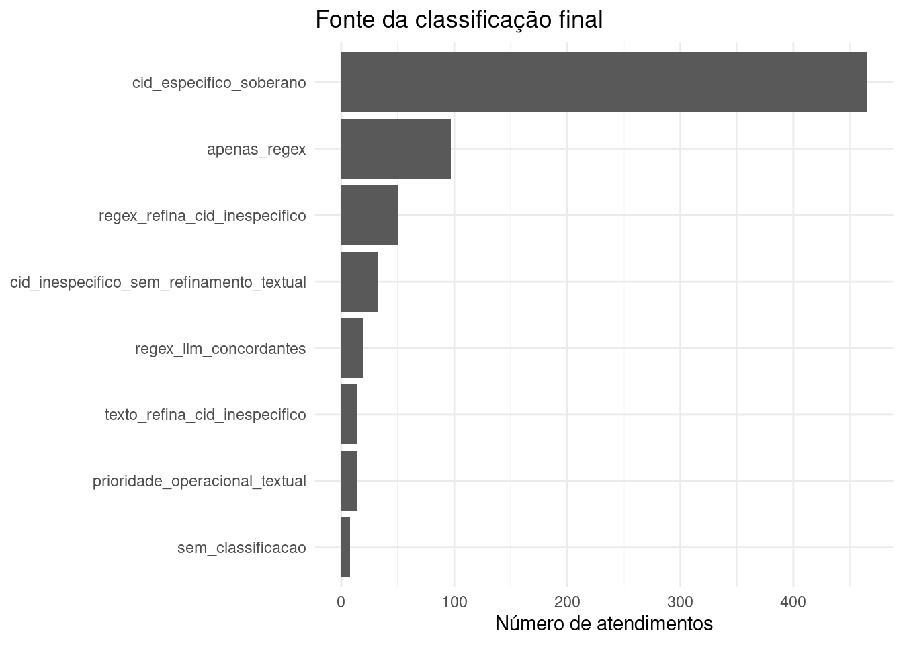

Ver código
source("R/00_pacotes.R")
source("R/04_duckdb.R")
source("R/10_classificacao_final.R")source("R/00_pacotes.R")
source("R/04_duckdb.R")
source("R/10_classificacao_final.R")Este capítulo consolida as três camadas do pipeline em uma única classificação sindrômica final por atendimento.
A etapa anterior comparou CID, regex e LLM sem decidir qual camada deveria prevalecer. Nesta etapa, a regra decisória é aplicada de forma explícita, transparente e auditável.
A classificação final segue uma regra hierárquica, mas com distinção entre CIDs específicos e CIDs inespecíficos.
1. CID específico para uma síndrome operacional → prevalece.
2. CID genérico ou inespecífico → pode ser refinado pelo texto clínico.
3. Regex e LLM concordantes → classificação textual aceita.
4. Apenas uma camada textual classifica → classificação aceita com revisão recomendada.
5. Regex e LLM divergentes → resolução por prioridade sindrômica operacional, com revisão recomendada.
6. Nenhuma camada classifica → atendimento permanece como não classificado.Essa abordagem preserva a utilidade operacional do CID, mas mantém as camadas textuais como apoio para situações em que a Nesta etapa, “CID soberano” não significa que qualquer CID deve prevalecer sobre o texto clínico. Códigos como R50 ou B34, por exemplo, indicam um quadro febril ou viral, mas não necessariamente definem uma síndrome operacional detalhada. Nesses casos, se a queixa ou anamnese trouxerem achados mais específicos — como sangramento, exantema, sintomas respiratórios ou sinais meníngeos — a classificação textual pode refinar a categoria final.
Nas situações em que CID não é informativo e as camadas textuais divergem, a escolha é feita por prioridade sindrômica operacional. Essa regra não representa probabilidade etiológica; ela apenas torna explícita a preferência por síndromes menos frequentes, mais específicas ou potencialmente mais relevantes para investigação.
knitr::kable(
get_prioridade_sindromica_final(),
caption = "Prioridade operacional usada para resolver divergências textuais"
)| prioridade | sindrome | criterio_operacional |
|---|---|---|
| 1 | febril_ictero_hemorragica | Combinação de icterícia e sangramento; síndrome menos frequente e mais específica. |
| 2 | febril_hemorragica | Presença de sangramento; potencial relevância para investigação e gravidade. |
| 3 | febril_neurologica_meningea | Sinais neurológicos ou meníngeos; maior criticidade operacional. |
| 4 | febril_exantematica | Quadro febril com exantema; relevante para doenças exantemáticas de interesse. |
| 5 | febril_gastrointestinal | Quadro febril com sintomas gastrointestinais. |
| 6 | febril_respiratoria | Quadro febril com sintomas respiratórios. |
| 7 | febril_inespecifica | Febre sem outro eixo sindrômico predominante. |
con <- connect_duckdb()
init_duckdb_schema(con)
comparacao_camadas <- read_comparacao_camadas(con)
list(
registros_comparacao = nrow(comparacao_camadas),
colunas_comparacao = ncol(comparacao_camadas)
)$registros_comparacao
[1] 700
$colunas_comparacao
[1] 32classificacao_final <- build_classificacao_final(comparacao_camadas)
knitr::kable(
classificacao_final |>
dplyr::select(
record_id,
dplyr::any_of(c("cid", "cid_nome")),
sindrome_cid,
sindrome_regex,
sindrome_llm,
sindrome_final,
fonte_classificacao_final,
revisao_manual_recomendada
) |>
dplyr::slice_head(n = 15),
caption = "Exemplo da classificação final por atendimento"
)| record_id | cid | cid_nome | sindrome_cid | sindrome_regex | sindrome_llm | sindrome_final | fonte_classificacao_final | revisao_manual_recomendada |
|---|---|---|---|---|---|---|---|---|
| SYN0001 | B34 | Infecção viral de localização não especificada | febril_inespecifica | febril_hemorragica | febril_hemorragica | febril_hemorragica | texto_refina_cid_inespecifico | FALSE |
| SYN0002 | A39 | Infecção meningocócica | febril_neurologica_meningea | febril_neurologica_meningea | febril_neurologica_meningea | febril_neurologica_meningea | cid_especifico_soberano | FALSE |
| SYN0003 | B34 | Infecção viral de localização não especificada | febril_inespecifica | febril_exantematica | febril_hemorragica | febril_hemorragica | prioridade_operacional_textual | TRUE |
| SYN0004 | A08 | Infecções intestinais virais | febril_gastrointestinal | febril_gastrointestinal | febril_gastrointestinal | febril_gastrointestinal | cid_especifico_soberano | FALSE |
| SYN0005 | NA | NA | NA | febril_exantematica | febril_exantematica | febril_exantematica | regex_llm_concordantes | FALSE |
| SYN0006 | J06 | Infecções agudas das vias aéreas superiores | febril_respiratoria | febril_respiratoria | febril_respiratoria | febril_respiratoria | cid_especifico_soberano | FALSE |
| SYN0007 | A05 | Outras intoxicações alimentares bacterianas | febril_gastrointestinal | febril_neurologica_meningea | febril_gastrointestinal | febril_gastrointestinal | cid_especifico_soberano | TRUE |
| SYN0008 | R50 | Febre de origem desconhecida | febril_inespecifica | febril_hemorragica | febril_hemorragica | febril_hemorragica | texto_refina_cid_inespecifico | FALSE |
| SYN0009 | J06 | Infecções agudas das vias aéreas superiores | febril_respiratoria | febril_exantematica | febril_exantematica | febril_respiratoria | cid_especifico_soberano | TRUE |
| SYN0010 | G03 | Meningite devida a outras causas e a causas não especificadas | febril_neurologica_meningea | febril_neurologica_meningea | febril_neurologica_meningea | febril_neurologica_meningea | cid_especifico_soberano | FALSE |
| SYN0011 | G00 | Meningite bacteriana | febril_neurologica_meningea | febril_neurologica_meningea | febril_neurologica_meningea | febril_neurologica_meningea | cid_especifico_soberano | FALSE |
| SYN0012 | NA | NA | NA | febril_exantematica | febril_hemorragica | febril_hemorragica | prioridade_operacional_textual | TRUE |
| SYN0013 | B15 | Hepatite aguda A | febril_ictero_hemorragica | febril_hemorragica | febril_hemorragica | febril_ictero_hemorragica | cid_especifico_soberano | TRUE |
| SYN0014 | A09 | Diarreia e gastroenterite de origem infecciosa presumível | febril_gastrointestinal | febril_gastrointestinal | febril_gastrointestinal | febril_gastrointestinal | cid_especifico_soberano | FALSE |
| SYN0015 | NA | NA | NA | febril_exantematica | febril_hemorragica | febril_hemorragica | prioridade_operacional_textual | TRUE |
resumo_final <- summarise_classificacao_final(classificacao_final)
knitr::kable(
resumo_final,
caption = "Distribuição dos atendimentos segundo a classificação final"
)| sindrome_final | n | percentual |
|---|---|---|
| febril_exantematica | 181 | 25.9 |
| febril_respiratoria | 177 | 25.3 |
| febril_gastrointestinal | 115 | 16.4 |
| febril_hemorragica | 85 | 12.1 |
| febril_neurologica_meningea | 60 | 8.6 |
| febril_ictero_hemorragica | 37 | 5.3 |
| febril_inespecifica | 37 | 5.3 |
| nao_classificado | 8 | 1.1 |
plot_classificacao_final(classificacao_final)
A tabela abaixo mostra qual regra ou camada foi responsável pela classificação final. Esse resumo é importante para avaliar a dependência do pipeline em relação ao CID e o papel complementar das camadas textuais.
fontes_final <- summarise_fontes_classificacao_final(classificacao_final)
knitr::kable(
fontes_final,
caption = "Fonte da classificação final"
)| fonte_classificacao_final | n | percentual |
|---|---|---|
| cid_especifico_soberano | 465 | 66.4 |
| apenas_regex | 97 | 13.9 |
| regex_refina_cid_inespecifico | 50 | 7.1 |
| cid_inespecifico_sem_refinamento_textual | 33 | 4.7 |
| regex_llm_concordantes | 19 | 2.7 |
| prioridade_operacional_textual | 14 | 2.0 |
| texto_refina_cid_inespecifico | 14 | 2.0 |
| sem_classificacao | 8 | 1.1 |
plot_fontes_classificacao_final(classificacao_final)
A recomendação de revisão manual não impede o uso operacional da classificação. Ela apenas sinaliza registros em que a decisão dependeu de evidência textual incompleta, de apenas uma camada textual ou de resolução de divergência entre regex e LLM.
knitr::kable(
summarise_revisao_manual(classificacao_final),
caption = "Registros com recomendação de revisão manual"
)| revisao_manual_recomendada | n | percentual |
|---|---|---|
| TRUE | 416 | 59.4 |
| FALSE | 284 | 40.6 |
amostra_auditoria_final <- selecionar_auditoria_classificacao_final(
classificacao_final = classificacao_final,
n = 25
)
knitr::kable(
amostra_auditoria_final |>
dplyr::select(
record_id,
dplyr::any_of(c("cid", "cid_nome")),
sindrome_cid,
sindrome_regex,
sindrome_llm,
sindrome_final,
fonte_classificacao_final,
motivo_revisao,
justificativa_llm
),
caption = "Amostra prioritária para auditoria da classificação final"
)| record_id | cid | cid_nome | sindrome_cid | sindrome_regex | sindrome_llm | sindrome_final | fonte_classificacao_final | motivo_revisao | justificativa_llm |
|---|---|---|---|---|---|---|---|---|---|
| SYN0007 | A05 | Outras intoxicações alimentares bacterianas | febril_gastrointestinal | febril_neurologica_meningea | febril_gastrointestinal | febril_gastrointestinal | cid_especifico_soberano | CID específico diverge de ao menos uma camada textual; revisar para auditoria. | Texto menciona febre, sintomas gastrointestinais, compatível com febril_gastrointestinal. |
| SYN0009 | J06 | Infecções agudas das vias aéreas superiores | febril_respiratoria | febril_exantematica | febril_exantematica | febril_respiratoria | cid_especifico_soberano | CID específico diverge de ao menos uma camada textual; revisar para auditoria. | Texto menciona febre, sintomas respiratórios, exantema/manchas, sintomas gastrointestinais, sintomas inespecíficos, compatível com febril_exantematica. |
| SYN0013 | B15 | Hepatite aguda A | febril_ictero_hemorragica | febril_hemorragica | febril_hemorragica | febril_ictero_hemorragica | cid_especifico_soberano | CID específico diverge de ao menos uma camada textual; revisar para auditoria. | Texto menciona febre, exantema/manchas, sangramento, sintomas inespecíficos, compatível com febril_hemorragica. |
| SYN0017 | A08 | Infecções intestinais virais | febril_gastrointestinal | febril_exantematica | febril_hemorragica | febril_gastrointestinal | cid_especifico_soberano | CID específico diverge de ao menos uma camada textual; revisar para auditoria. | Texto menciona febre, sintomas respiratórios, exantema/manchas, sintomas gastrointestinais, sangramento, compatível com febril_hemorragica. |
| SYN0018 | A08 | Infecções intestinais virais | febril_gastrointestinal | febril_neurologica_meningea | febril_gastrointestinal | febril_gastrointestinal | cid_especifico_soberano | CID específico diverge de ao menos uma camada textual; revisar para auditoria. | Texto menciona febre, sintomas gastrointestinais, compatível com febril_gastrointestinal. |
| SYN0019 | J10 | Influenza devida a outro vírus identificado | febril_respiratoria | febril_exantematica | febril_exantematica | febril_respiratoria | cid_especifico_soberano | CID específico diverge de ao menos uma camada textual; revisar para auditoria. | Texto menciona febre, sintomas respiratórios, exantema/manchas, sintomas gastrointestinais, sintomas inespecíficos, compatível com febril_exantematica. |
| SYN0021 | J11 | Influenza devida a vírus não identificado | febril_respiratoria | febril_exantematica | febril_exantematica | febril_respiratoria | cid_especifico_soberano | CID específico diverge de ao menos uma camada textual; revisar para auditoria. | Texto menciona febre, sintomas respiratórios, exantema/manchas, sintomas gastrointestinais, compatível com febril_exantematica. |
| SYN0026 | A08 | Infecções intestinais virais | febril_gastrointestinal | febril_neurologica_meningea | febril_gastrointestinal | febril_gastrointestinal | cid_especifico_soberano | CID específico diverge de ao menos uma camada textual; revisar para auditoria. | Texto menciona febre, sintomas gastrointestinais, compatível com febril_gastrointestinal. |
| SYN0028 | A91 | Febre hemorrágica devida ao vírus da dengue | febril_hemorragica | febril_exantematica | febril_exantematica | febril_hemorragica | cid_especifico_soberano | CID específico diverge de ao menos uma camada textual; revisar para auditoria. | Texto menciona febre, exantema/manchas, compatível com febril_exantematica. |
| SYN0030 | A09 | Diarreia e gastroenterite de origem infecciosa presumível | febril_gastrointestinal | febril_neurologica_meningea | febril_gastrointestinal | febril_gastrointestinal | cid_especifico_soberano | CID específico diverge de ao menos uma camada textual; revisar para auditoria. | Texto menciona febre, sintomas gastrointestinais, compatível com febril_gastrointestinal. |
| SYN0034 | A08 | Infecções intestinais virais | febril_gastrointestinal | febril_neurologica_meningea | febril_gastrointestinal | febril_gastrointestinal | cid_especifico_soberano | CID específico diverge de ao menos uma camada textual; revisar para auditoria. | Texto menciona febre, sintomas gastrointestinais, compatível com febril_gastrointestinal. |
| SYN0039 | A08 | Infecções intestinais virais | febril_gastrointestinal | febril_exantematica | febril_hemorragica | febril_gastrointestinal | cid_especifico_soberano | CID específico diverge de ao menos uma camada textual; revisar para auditoria. | Texto menciona febre, sintomas respiratórios, exantema/manchas, sintomas gastrointestinais, sangramento, compatível com febril_hemorragica. |
| SYN0040 | J11 | Influenza devida a vírus não identificado | febril_respiratoria | febril_exantematica | febril_hemorragica | febril_respiratoria | cid_especifico_soberano | CID específico diverge de ao menos uma camada textual; revisar para auditoria. | Texto menciona febre, sintomas respiratórios, exantema/manchas, sintomas gastrointestinais, sangramento, compatível com febril_hemorragica. |
| SYN0045 | A08 | Infecções intestinais virais | febril_gastrointestinal | febril_exantematica | febril_hemorragica | febril_gastrointestinal | cid_especifico_soberano | CID específico diverge de ao menos uma camada textual; revisar para auditoria. | Texto menciona febre, sintomas respiratórios, exantema/manchas, sintomas gastrointestinais, sangramento, compatível com febril_hemorragica. |
| SYN0051 | J06 | Infecções agudas das vias aéreas superiores | febril_respiratoria | febril_exantematica | febril_exantematica | febril_respiratoria | cid_especifico_soberano | CID específico diverge de ao menos uma camada textual; revisar para auditoria. | Texto menciona febre, sintomas respiratórios, exantema/manchas, sintomas gastrointestinais, sintomas inespecíficos, compatível com febril_exantematica. |
| SYN0052 | J06 | Infecções agudas das vias aéreas superiores | febril_respiratoria | febril_exantematica | febril_exantematica | febril_respiratoria | cid_especifico_soberano | CID específico diverge de ao menos uma camada textual; revisar para auditoria. | Texto menciona febre, sintomas respiratórios, exantema/manchas, sintomas gastrointestinais, compatível com febril_exantematica. |
| SYN0054 | J06 | Infecções agudas das vias aéreas superiores | febril_respiratoria | febril_exantematica | febril_exantematica | febril_respiratoria | cid_especifico_soberano | CID específico diverge de ao menos uma camada textual; revisar para auditoria. | Texto menciona febre, sintomas respiratórios, exantema/manchas, sintomas gastrointestinais, compatível com febril_exantematica. |
| SYN0055 | G00 | Meningite bacteriana | febril_neurologica_meningea | febril_neurologica_meningea | febril_exantematica | febril_neurologica_meningea | cid_especifico_soberano | CID específico diverge de ao menos uma camada textual; revisar para auditoria. | Texto menciona febre, exantema/manchas, sintomas inespecíficos, compatível com febril_exantematica. |
| SYN0066 | B05 | Sarampo | febril_exantematica | febril_hemorragica | febril_hemorragica | febril_exantematica | cid_especifico_soberano | CID específico diverge de ao menos uma camada textual; revisar para auditoria. | Texto menciona febre, exantema/manchas, sangramento, sintomas inespecíficos, compatível com febril_hemorragica. |
| SYN0067 | B05 | Sarampo | febril_exantematica | febril_hemorragica | febril_hemorragica | febril_exantematica | cid_especifico_soberano | CID específico diverge de ao menos uma camada textual; revisar para auditoria. | Texto menciona febre, exantema/manchas, sangramento, sintomas inespecíficos, compatível com febril_hemorragica. |
| SYN0068 | B17 | Outras hepatites virais agudas | febril_ictero_hemorragica | febril_exantematica | febril_hemorragica | febril_ictero_hemorragica | cid_especifico_soberano | CID específico diverge de ao menos uma camada textual; revisar para auditoria. | Texto menciona febre, sintomas respiratórios, exantema/manchas, sintomas gastrointestinais, sangramento, compatível com febril_hemorragica. |
| SYN0071 | J06 | Infecções agudas das vias aéreas superiores | febril_respiratoria | febril_exantematica | febril_exantematica | febril_respiratoria | cid_especifico_soberano | CID específico diverge de ao menos uma camada textual; revisar para auditoria. | Texto menciona febre, sintomas respiratórios, exantema/manchas, sintomas gastrointestinais, compatível com febril_exantematica. |
| SYN0072 | A38 | Escarlatina | febril_exantematica | febril_hemorragica | febril_hemorragica | febril_exantematica | cid_especifico_soberano | CID específico diverge de ao menos uma camada textual; revisar para auditoria. | Texto menciona febre, exantema/manchas, sangramento, sintomas inespecíficos, compatível com febril_hemorragica. |
| SYN0074 | J06 | Infecções agudas das vias aéreas superiores | febril_respiratoria | febril_exantematica | febril_hemorragica | febril_respiratoria | cid_especifico_soberano | CID específico diverge de ao menos uma camada textual; revisar para auditoria. | Texto menciona febre, sintomas respiratórios, exantema/manchas, sintomas gastrointestinais, sangramento, compatível com febril_hemorragica. |
| SYN0076 | G03 | Meningite devida a outras causas e a causas não especificadas | febril_neurologica_meningea | febril_exantematica | febril_hemorragica | febril_neurologica_meningea | cid_especifico_soberano | CID específico diverge de ao menos uma camada textual; revisar para auditoria. | Texto menciona febre, exantema/manchas, sintomas gastrointestinais, sangramento, sintomas inespecíficos, compatível com febril_hemorragica. |
A classificação final é persistida no DuckDB para uso nos capítulos seguintes, especialmente nas análises temporais e territoriais.
write_classificacao_final(
con = con,
dados = classificacao_final,
overwrite = TRUE
)
write_execution_log(
con = con,
etapa = "classificacao_final",
n_registros = nrow(classificacao_final),
observacao = "Classificação final com CID específico soberano e refinamento textual para CIDs genéricos ou inespecíficos.")
knitr::kable(
duckdb_counts(con),
caption = "Tabelas persistidas no DuckDB após a classificação final"
)| tabela | n |
|---|---|
| tb_atendimentos | 700 |
| tb_classificacao_cid | 700 |
| tb_classificacao_final | 700 |
| tb_classificacao_llm | 200 |
| tb_classificacao_regex | 700 |
| tb_comparacao_camadas | 700 |
| tb_execucoes | 159 |
A classificação final transforma o pipeline em uma saída operacional única, mantendo rastreabilidade da decisão. Para cada atendimento, é possível identificar não apenas a síndrome final atribuída, mas também a fonte decisória e a necessidade de revisão manual.
A regra de CID soberano garante alinhamento com a informação estruturada quando o CID é suficientemente específico para a vigilância sindrômica. Entretanto, CIDs genéricos ou inespecíficos não devem impedir o aproveitamento de informações clínicas mais detalhadas presentes na queixa ou na anamnese. Por isso, as camadas regex e LLM podem refinar a classificação final quando o CID apenas indica um quadro febril, viral ou inespecífico, mas o texto aponta uma síndrome operacional mais definida.
Essa base final será a entrada para as próximas etapas do relatório, incluindo séries temporais, distribuição territorial, monitoramento por unidade e auditoria metodológica.
DBI::dbDisconnect(con, shutdown = TRUE)